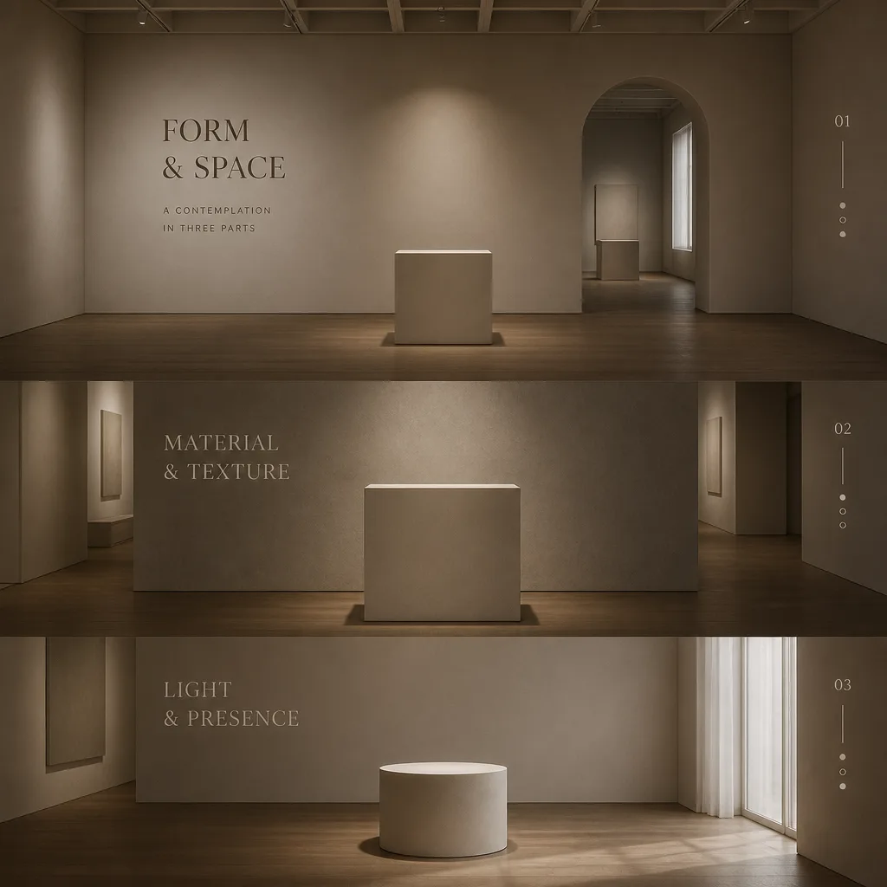
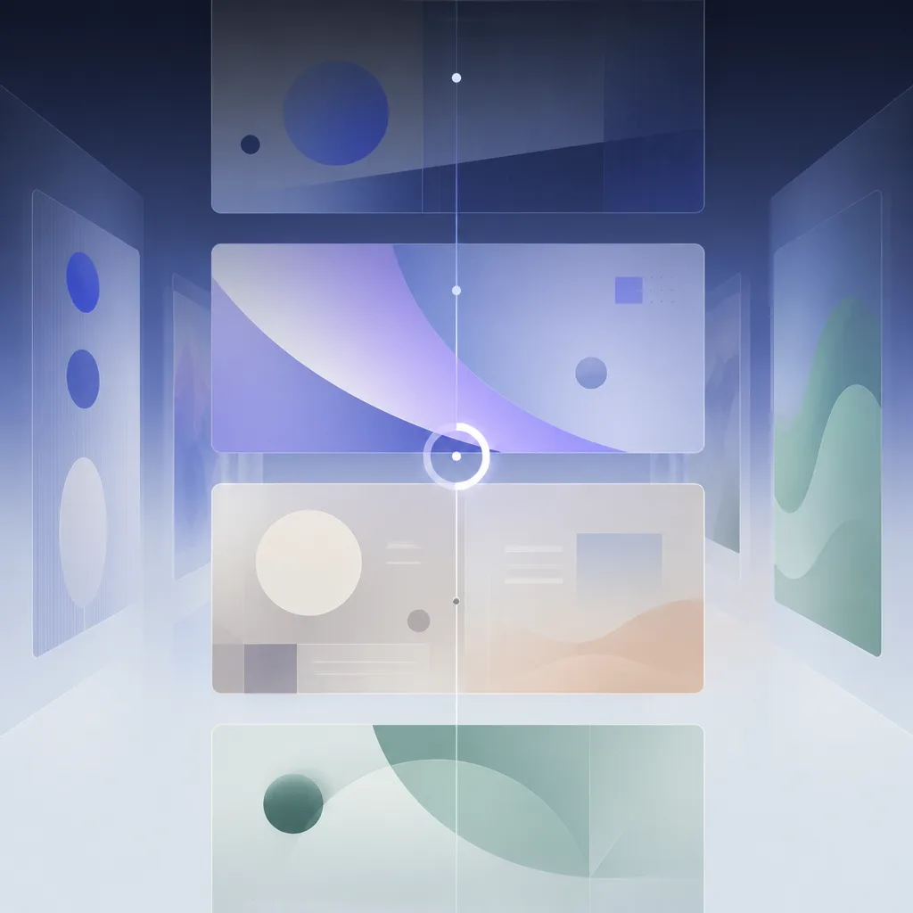
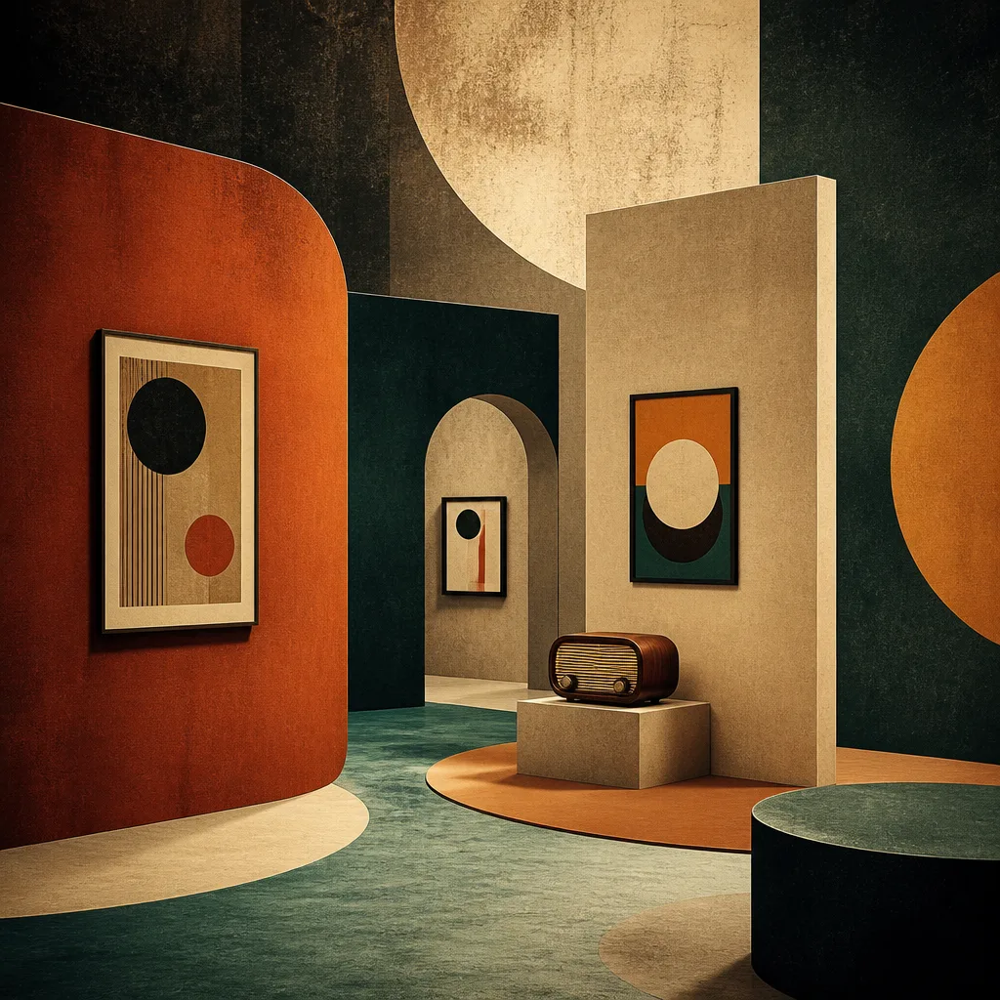
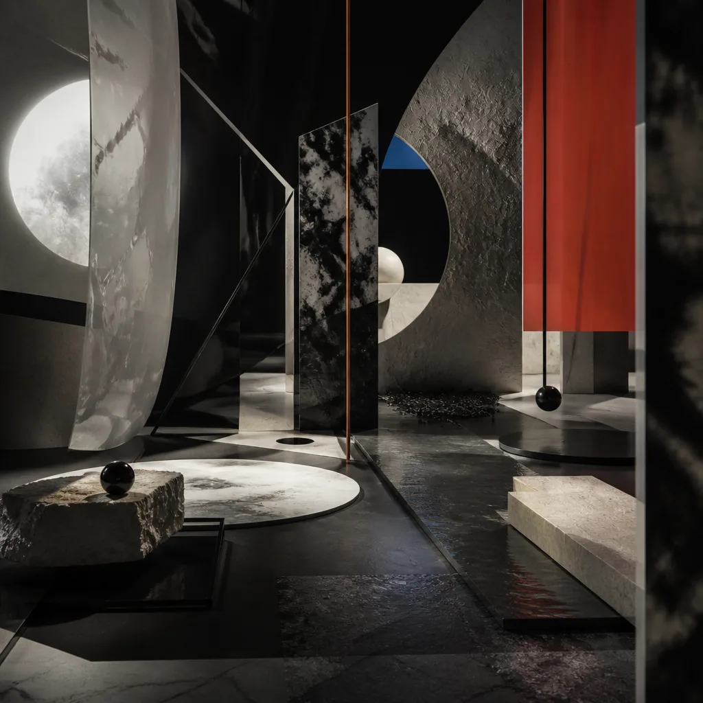
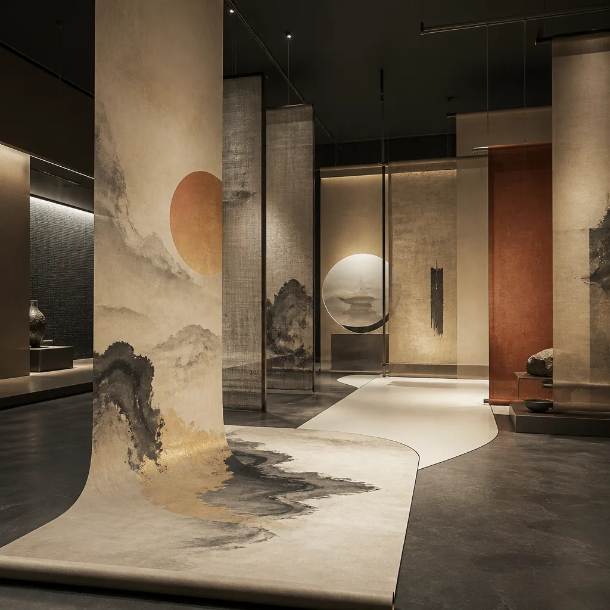
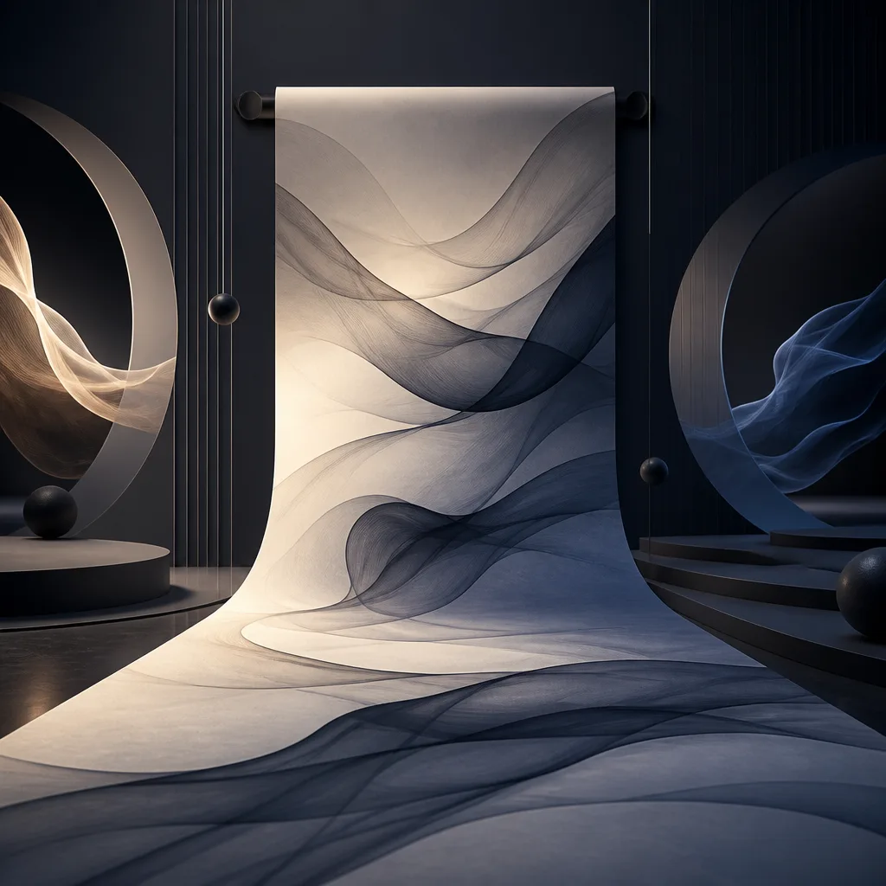

AQUALUX 2026
設計光譜展
探索設計的無限可能，一場關於形態、功能與創新的視覺旅程。 透過滾動進度，引導您沉浸於每個設計章節。
01
策展論述
aqualux 2026 設計光譜展，旨在透過一系列精心策劃的展品，揭示設計領域的多元面貌與前沿趨勢。我們相信設計不僅是解決問題的工具，更是引領文化與技術進步的關鍵力量。本次展覽以「光譜」為核心概念，象徵設計從基礎理論到實驗創新，從實用功能到美學探索的廣闊範疇。
「觀看即探索，捲動即前行。我們以最純粹的介面，引導觀者穿梭於設計的每個維度，讓資訊流動如時間本身。」
展覽匯集了來自不同背景的設計師，他們的作品共同構成了一幅豐富而動態的設計圖景。從精緻的平面排版到沉浸式的互動體驗，從復古美學的再詮釋到未來科技的展望，每個展區都像光譜中的一個頻段，折射出獨特的設計哲學與實踐。我們邀請您隨著頁面滾動，如同展開一卷時間的畫軸，逐步解鎖設計的奧秘。
本次展覽不僅是對設計成果的展示，更是一次關於「觀看」與「引導」的實驗。透過直觀的滾動進度條與側邊章節導航，我們希望提供一種流暢、無縫的資訊獲取體驗，讓觀者能夠專注於內容本身，同時清晰感知自己在整個敘事中的位置。這是一種對數位閱讀體驗的深思，也是對資訊架構美學的探索。
— Jerry @ aqualux.dev
02
參展設計師

Neon Lee
UI / Brutalism

Chrome Ho
Motion / Parallax

Glitch Chang
Experimental

Paper Wu
Editorial / Minimal

Vapor Lin
Retro / Aesthetic

Swiss Chen
Cultural / Grid

Glass Yang
Glassmorphism

ASCII Fan
Terminal / CLI

Hand Chao
Sketch / Doodle

Magne Huang
Interaction

Cyber Su
Cyberpunk / Glow

Noise Kao
Film Grain
03
場地資訊

松山文創園區 5 號倉庫
本次 aqualux 2026 設計光譜展選址於具有歷史底蘊的松山文創園區 5 號倉庫。其寬敞的空間與獨特的工業風格，為本次展覽提供了絕佳的背景，讓設計作品在傳統與現代的對話中綻放光彩。
展覽日期： 2026.12.06 — 12.21 (共 16 天)
開放時間： 每日 10:00 - 18:00 (最後入場 17:30)
交通資訊：
- 捷運：板南線「國父紀念館站」5 號出口，步行約 5 分鐘。
- 公車：請參考松山文創園區官方網站。
園區內設有停車場，但車位有限，建議搭乘大眾運輸工具。
04
五大展區

Z01
主流頻譜
Mainstream Frequency
探索當代設計中最廣泛應用且影響深遠的風格與趨勢，展示其在各領域的成熟應用與演變。
5F-A1 · 5 作品

Z02
時光殘響
Retro Echo
回溯過往經典設計，探討復古美學如何在當代語境中被重新演繹與賦予新生命。
5F-A2 · 6 作品

Z03
前衛實驗室
Avant Lab
聚焦於實驗性與前瞻性的設計實踐，挑戰傳統邊界，預示未來設計的可能方向。
5F-B1 · 6 作品

Z04
文化光譜
Cultural Spectrum
深入探討設計如何根植於在地文化，並透過多元視角展現不同文化背景下的設計語彙。
5F-B2 · 5 作品

Z05
動態廳
Motion Hall
專注於動態設計、互動體驗與沉浸式裝置，呈現設計在時間維度上的藝術表現。
5F-C1 · 15 作品
05
講座排程
| 時間 | 活動 | 講者 | 地點 |
|---|---|---|---|
| 12/07 (日) 14:00 | 開幕專題演講：設計的未來頻譜 | Jerry @ aqualux.dev | 主講廳 |
| 12/08 (一) 15:30 | 設計師對談：跨領域的融合與創新 | Neon Lee & Chrome Ho | 互動區 |
| 12/10 (三) 14:00 | 工作坊：Figma 進階技巧 | Paper Wu | 實驗室 |
| 12/13 (六) 10:30 | 設計趨勢論壇：AI 與設計共舞 | Magne Huang & Cyber Su | 主講廳 |
| 12/14 (日) 16:00 | 閉幕座談：設計的社會責任 | 全體策展人與部分設計師 | 主講廳 |
06
票務資訊
SINGLE PASS
單日入場
NT$ 480
每人 / 每日
- ✓ 展覽單日入場
- ✓ 語音導覽服務
- ✓ 紀念電子票券
FULL ACCESS
全展期通票
NT$ 1,280
每人 / 全展期
- ✓ 展覽期間無限次入場
- ✓ 語音導覽服務
- ✓ 紀念電子票券
- ✓ 獨家設計海報
CURATOR PASS
含 workshop
NT$ 2,880
每人 / 全展期
- ✓ 展覽期間無限次入場
- ✓ 語音導覽服務
- ✓ 紀念電子票券
- ✓ 獨家設計海報
- ✓ 任選一場工作坊
- ✓ 策展人導覽一次